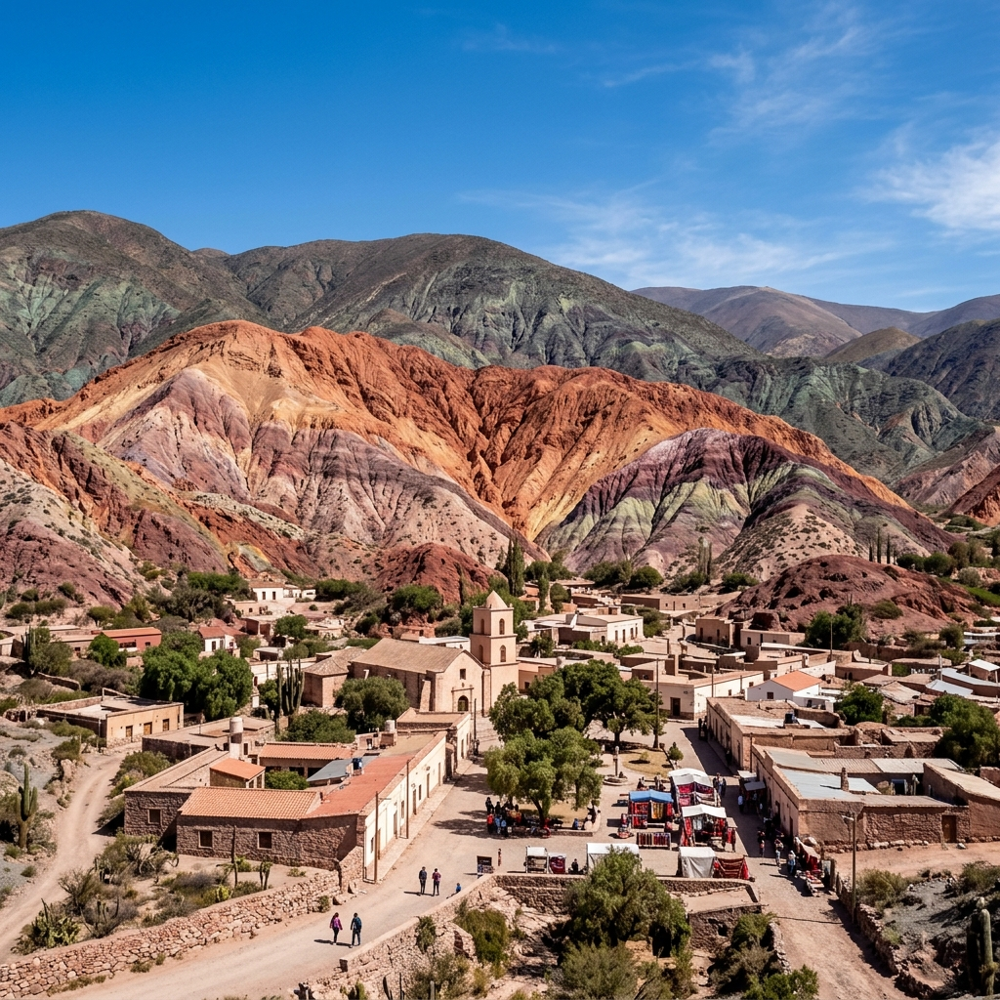
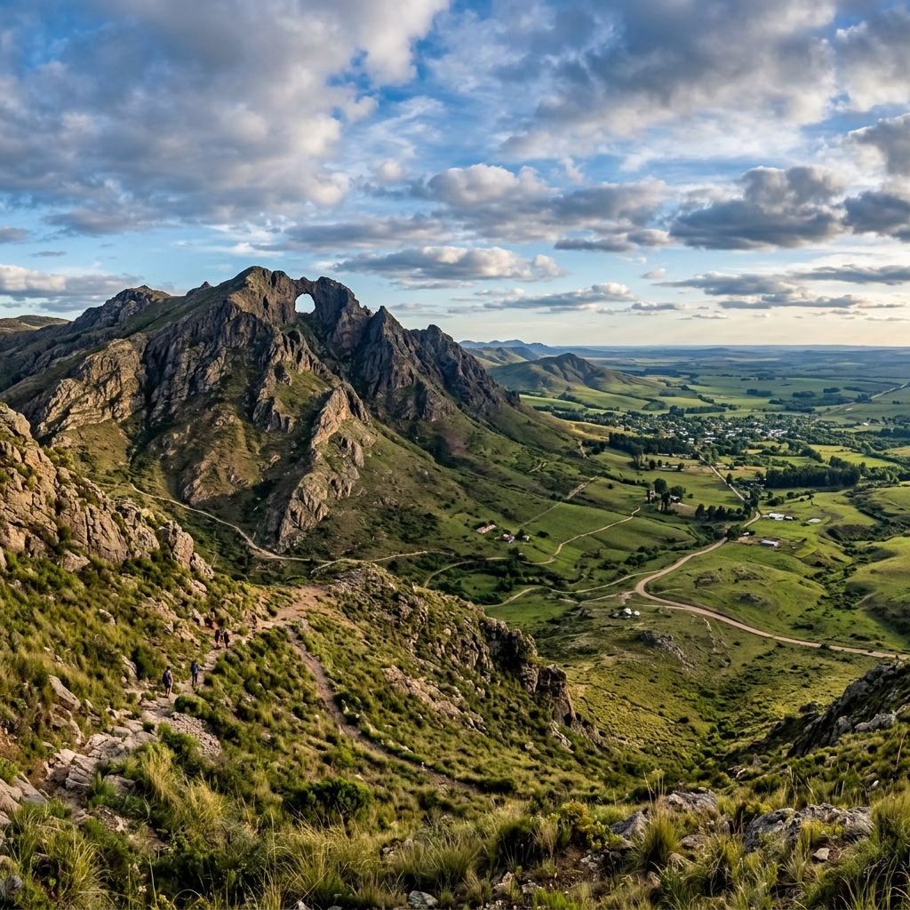

¿Y si las ciudades pudieran hablarte al oído? 🎧✨
Caminá. Escuchá. Descubrí. Sin tocar tu celular.
*Por el momento, disponible únicamente para dispositivos Android.
YouGuide no es otra app de mapas; es tu nuevo sentido para explorar el mundo. Olvidate de caminar mirando una pantalla o de leer carteles aburridos bajo el sol. Nuestra tecnología de audio automático por proximidad detecta dónde estás y te narra la historia secreta, el dato curioso o la leyenda oculta del lugar justo cuando estás frente a él.
Es una experiencia 100% manos libres, diseñada bajo la filosofía "Accessibility First": tan intuitiva que es la herramienta definitiva para personas no videntes y tan fascinante que cambia la forma de viajar de cualquier curioso.
Solo 3 pasos para transformar tu próxima caminata y comenzar la exploración en cualquier rincón.
Ubicate en el punto de inicio de cualquier ciudad disponible (una plaza, un monumento, el inicio de un sendero).
Conectá tus auriculares, bloqueá la pantalla y guardá el teléfono en el bolsillo. No vas a necesitar volver a mirarlo.
Vas a escuchar un "ding!" apenas camines cerca del sitio y la historia curada comenzará automáticamente.
Ya estamos operativos en 43 ciudades de Argentina, incluyendo los puntos más icónicos de:
Dejá que la Piedra Movediza te cuente su secreto.
Descubrí la potencia del Art Déco de Salamone.
Sentí el pulso de la historia en cada esquina porteña.
Mucho más que mar y arena; historias que te van a sorprender.

La Quebrada de Humahuaca y sus colores milenarios.
Sierras, historia jesuítica y la Docta en tu oído.
Cuna de la Bandera y secretos a orillas del Paraná.
Lagos, bosques y leyendas patagónicas que te envuelven.
Místicos paisajes andinos y relatos ancestrales.
Cataratas, selva y las ruinas jesuíticas que hablan.
Caminá entre gigantes de piedra roja en Talampaya.
Historias del fin del mundo y navegación por el Beagle.

Explorá los huecos de la historia en las sierras más antiguas.
...y otras 33 ciudades. Desde Salta y El Calafate hasta Mendoza, Iguazú y Rosario.
Nuestra misión no tiene fronteras. Estamos mapeando el continente para llevar la historia a tus oídos vayas a donde vayas.
Descargá las guías antes de salir. Ideal para senderismo en zonas como El Chaltén o cordillera sin señal.
Pronto cualquier persona podrá grabar y subir las historias de su ciudad. El contenido será moderado por IA.
Canjeá tus puntos de experiencia (XP) y niveles por cafés, descuentos y regalos en la red de comercios locales adheridos.
"Fui a la Sierra de Tandil y es una locura cómo te empieza a hablar la app justo cuando llegas a la Movediza. Por fin pude disfrutar el paisaje real y sacar fotos sin estar leyendo texto en la pantallita del celular."
"Me cambió la forma de pasear en mis findes libres. Vivo en Buenos Aires y paso por lugares con historia todos los días que ahora descubro de la nada y me asombro... ¡Es el futuro!"
"La precisión del GPS es fantástica (literal te avisa cuando estás a 50 metros). Soy estudiante de turismo y me encanta cómo está armada la narrativa de la historia. Es muy envolvente."
YouGuide se encuentra actualmente en fase de Beta Exclusiva. Distribuimos el APK de prueba (sin costo) directamente a nuestra comunidad para optimizar y ajustar detalles antes de nuestro gran lanzamiento oficial. Al participar hoy, nos ayudás a moldear el futuro de la app.
¡Al contrario! Como la pantalla permanece apagada en tu bolsillo y procesamos la geolocalización de modo ultra-eficiente en segundo plano, vas a gastar menos batería que usando apps tradicionales con mapas visibles.
No es obligatorio (la app puede sonar por el altavoz de tu teléfono si estás caminando por el campo), pero te recomendamos enfáticamente usarlos. El efecto de "susurro al oído" en medio de la ciudad genera esa inmersión histórica que nos hace únicos.
Quienes instalan y participan de la Beta tienen los relatos gratuitos. El único "costo" es tu opinión: luego de que visites sitios usando la app, te pediremos que respondas una breve encuesta para entender qué te gustó y qué debemos mejorar.
Queremos que seas de los primeros 1.000 usuarios en Argentina en probar esta tecnología antes del lanzamiento global.
Descargá el APK Beta, explorá tu ciudad con los auriculares puestos y ayudanos a evolucionar. Para mantener tu acceso activo y desbloquear nuevas rutas exclusivas en el corto plazo, te pediremos completar una encuesta de solo 2 minutos tras tu primera caminata. Tu feedback es el motor que nos permite mejorar tu experiencia.
Es rápido, seguro y 100% gratis.
Bajá el archivo APK desde el botón de descarga.
Aceptá "Fuentes desconocidas" en los ajustes de Android.
Abrí la app, poné los auriculares y empezá a caminar.
⚠️ Disponible solo para Android. La beta no se encuentra en Google Play Store; se instala como APK directo.
¿Tenés dudas, alianzas turísticas sugerencias o querés que YouGuide desembarque en tu ciudad? ¡Hablemos!